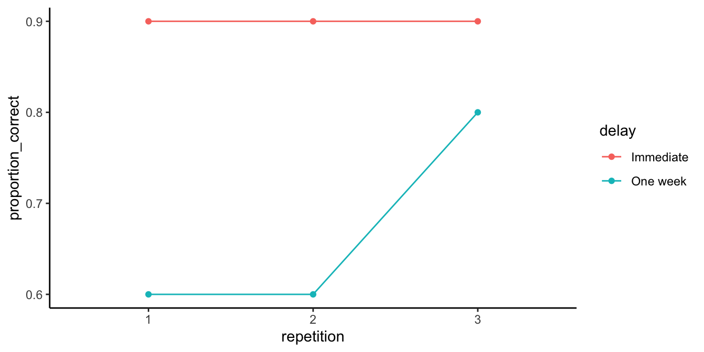

10 More On Factorial Designs
We are going to do a couple things in this chapter. The most important thing is more exposure to factorial designs. The second thing we do is show that you can mix it up with ANOVA. You already know that you can have more than one IV. And, you know that research designs can be between-subjects or within-subjects (repeated-measures). When you have more than one IV, they can all be between-subjects variables, they can all be within-subject repeated measures, or they can be a mix: say one between-subject variable and one within-subject variable. You can use ANOVA to analyze all of these kinds of designs. You always get one main effect for each IV, and a number of interactions, or just one, depending on the number of IVs.
10.1 Looking at main effects and interactions
Designs with multiple factors are very common. When you read a research article you will often see graphs that show the results from designs with multiple factors. It would be good for you if you were comfortable interpreting the meaning of those results. The skill here is to be able to look at a graph and see the pattern of main effects and interactions. This skill is important, because the patterns in the data can quickly become very complicated looking, especially when there are more than two independent variables, with more than two levels.
10.1.1 2x2 designs
Let’s take the case of 2x2 designs. There will always be the possibility of two main effects and one interaction. You will always be able to compare the means for each main effect and interaction. If the appropriate means are different then there is a main effect or interaction. Here’s the thing, there a bunch of ways all of this can turn out. Check out the ways, there are 8 of them:
- no IV1 main effect, no IV2 main effect, no interaction
- IV1 main effect, no IV2 main effect, no interaction
- IV1 main effect, no IV2 main effect, interaction
- IV1 main effect, IV2 main effect, no interaction
- IV1 main effect, IV2 main effect, interaction
- no IV1 main effect, IV2 main effect, no interaction
- no IV1 main effect, IV2 main effect, interaction
- no IV1 main effect, no IV2 main effect, interaction
OK, so if you run a 2x2, any of these 8 general patterns could occur in your data. That’s a lot to keep track of isn’t. As you develop your skills in examining graphs that plot means, you should be able to look at the graph and visually guesstimate if there is, or is not, a main effect or interaction. You will need you inferential statistics to tell you for sure, but it is worth knowing how to know see the patterns.
Figure 10.1 shows the possible patterns of main effects and interactions in bar graph form. Here is a legend for the labels in the panels.
- 1 = there was a main effect for IV1.
- ~1 = there was not a main effect for IV1
- 2 = there was a main effect for IV2
- ~2 = there was not a main effect of IV2
- 1x2 = there was an interaction
- ~1x2 = there was not an interaction

Figure 10.2 shows the same eight patterns in line graph form:
The line graphs accentuates the presence of interaction effects. Whenever the lines cross, or would cross if they kept going, you have a possibility of an interaction. Whenever the lines are parallel, there can’t be an interaction. When both of the points on the A side are higher or lower than both of the points on the B side, then you have a main effect for IV1 (A vs B). Whenever the green line is above or below the red line, then you have a main effect for IV2 (1 vs. 2). We know this is complicated. You should see what all the possibilities look like when we start adding more levels or more IVs. It gets nuts. Because of this nuttiness, it is often good practice to make your research designs simple (as few IVs and levels as possible to test your question). That way it will be easier to interpret your data. Whenever you see that someone ran a 4x3x7x2 design, your head should spin. It’s just too complicated.
10.2 Interpreting main effects and interactions
The interpretation of main effects and interactions can get tricky. Consider the concept of a main effect. This is the idea that a particular IV has a consistent effect. For example, drinking 5 cups of coffee makes you more awake compared to not drinking 5 cups of coffee. The main effect of drinking 5 cups of coffee vs not drinking coffee will generally be true across the levels of other IVs in our life. For example, let’s say you conducted an experiment testing whether the effect of drinking 5 cups of coffee vs not, changes depending on whether you are in your house or in a car. Perhaps the situation matters? No, probably not so much. You will probably still be more awake in your house, or your car, after having 5 cups of coffee, compared to if you hadn’t.
The coffee example is a reasonably good example of a consistent main effect. Another silly kind of example might be the main effect of shoes on your height. For example, if your IV was wearing shoes or not, and your DV was height, then we could expect to find a main effect of wearing shoes on your measurement of height. When you wear shoes, you will become taller compared to when you don’t wear shoes. Wearing shoes adds to your total height. In fact, it’s hard to imagine how the effect of wearing shoes on your total height would ever interact with other kinds of variables. You will be always be that extra bit taller wearing shoes. Indeed, if there was another manipulation that could cause an interaction that would truly be strange. For example, imagine if the effect of being inside a bodega or outside a bodega interacted with the effect of wearing shoes on your height. That could mean that shoes make you taller when you are outside a bodega, but when you step inside, your shoes make you shorter…but, obviously this is just totally ridiculous. That’s correct, it is often ridiculous to expect that one IV will have an influence on the effect of another, especially when there is no good reason.
The summary here is that it is convenient to think of main effects as a consistent influence of one manipulation. However, when an interaction is observed, this messes up the consistency of the main effect. That is the very definition of an interaction. It means that some main effect is not behaving consistently across different situations. Indeed, whenever we find an interaction, sometimes we can question whether or not there really is a general consistent effect of some manipulation, or instead whether that effect only happens in specific situations.
For this reason, you will often see that researchers report their findings this way:
“We found a main effect of X, BUT, this main effect was qualified by an interaction between X and Y”.
Notice the big BUT. Why is it there? The sentence points out that before they talk about the main effect, they need to first talk about the interaction, which is making the main effect behave inconsistently. In other words, the interpretation of the main effect depends on the interaction, the two things have to be thought of together to make sense of them.
Here are two examples to help you make sense of these issues:
10.2.1 A consistent main effect and an interaction
Figure 10.3 shows a main effect and interaction. There is a main effect of IV2: the level 1 means (red points and line) are both lower than the level 2 means (aqua points and line). There is also an interaction. The size of the difference between the red and aqua points in the A condition (left) is bigger than the size of the difference in the B condition.
How would we interpret this? We could say there WAS a main effect of IV2, BUT it was qualified by an IV1 x IV2 interaction.
What’s the qualification? The size of the IV2 effect changed as a function of the levels of IV1. It was big for level A, and small for level B of IV1.
What does the qualification mean for the main effect? Well, first it means the main effect can be changed by the other IV. That’s important to know. Does it also mean that the main effect is not a real main effect because there was an interaction? Not really, there is a generally consistent effect of IV2. The green points are above the red points in all cases. Whatever IV2 is doing, it seems to work in at least a couple situations, even if the other IV also causes some change to the influence.
10.2.2 An inconsistent main effect and an interaction
Figure 10.4 shows another 2x2 design. You should see an interaction here straight away. The difference between the aqua and red points in condition A (left two dots) is huge, and there is 0 difference between them in condition B. Is there an interaction? Yes!
Are there any main effects here? With data like this, sometimes an ANOVA will suggest that you do have significant main effects. For example, what is the mean difference between level 1 and 2 of IV2? That is the average of the green points ( (10+5)/2 = 15/2= 7.5 ) compared to the average of the red points (5). There will be a difference of 2.5 for the main effect (7.5 vs. 5).
Starting to see the issue here? From the perspective of the main effect (which collapses over everything and ignores the interaction), there is an overall effect of 2.5. In other words, level 2 adds 2.5 in general compared to level 1. However, we can see from the graph that IV2 does not do anything in general. It does not add 2.5s everywhere. It adds 5 in condition A, and nothing in condition B. It only does one thing in one condition.
What is happening here is that a “main effect” is produced by the process of averaging over a clear interaction.
How would we interpret this? We might have to say there was a main effect of IV2, BUT we would definitely say it was qualified by an IV1 x IV2 interaction.
What’s the qualification? The size of the IV2 effect completely changes as a function of the levels of IV1. It was big for level A, and nonexistent for level B of IV1.
What does the qualification mean for the main effect? In this case, we might doubt whether there is a main effect of IV2 at all. It could turn out that IV2 does not have a general influence over the DV all of the time, it may only do something in very specific circumstances, in combination with the presence of other factors.
10.3 Mixed Designs
Throughout this book we keep reminding you that research designs can take different forms. The manipulations can be between-subjects (different subjects in each group), or within-subjects (everybody contributes data in all conditions). If you have more than one manipulation, you can have a mixed design when one of your IVs is between-subjects and one of the other ones is within-subjects.
The only “trick” to these designs is to use the appropriate error terms to construct the F-values for each effect. Effects that have a within-subjects repeated measure (IV) use different error terms than effects that only have a between-subject IV. In principle, you could run an ANOVA with any number of IVs, and any of them good be between or within-subjects variables.
Because this is an introductory textbook, we leave out a full discussion on mixed designs. What we are leaving out are the formulas to construct ANOVA tables that show how to use the correct error terms for each effect. There are many good more advanced textbooks that discuss these issues in much more depth. And, these things can all be Googled. This is a bit of a cop-out on our part, and we may return to fill in this section at some point in the future (or perhaps someone else will add a chapter about this).
In the lab manual, you will learn how to conduct a mixed design ANOVA using software. Generally speaking, the software takes care of the problem of using the correct error terms to construct the ANOVA table.
10.4 More complicated designs
Up until now we have focused on the simplest case for factorial designs, the 2x2 design, with two IVs, each with 2 levels. It is worth spending some time looking at a few more complicated designs and how to interpret them.
10.4.1 2x3 design
In a 2x3 design there are two IVs. IV1 has two levels, and IV2 has three levels. Typically, there would be one DV. Let’s talk about the main effects and interaction for this design.
First, let’s make the design concrete. Let’s imagine we are running a memory experiment. We give people some words to remember, and then test them to see how many they can correctly remember. Our DV is proportion correct. We know that people forget things over time. Our first IV will be time of test, immediate vs. 1 week. The time of test IV will produce a forgetting effect. Generally, people will have a higher proportion correct on an immediate test of their memory for things they just saw, compared to testing a week later.
We might be interested in manipulations that reduce the amount of forgetting that happens over the week. The second IV could be many things. Let’s make it the number of time people got to study the items before the memory test, once, twice or three times. We call IV2 the repetition manipulation.
We might expect data like shown in Figure 10.5:
The figure shows some pretend means in all conditions. Let’s talk about the main effects and interaction.
First, the main effect of delay (time of test) is very obvious, the red line is way above the aqua line. Proportion correct on the memory test is always higher when the memory test is taken immediately compared to after one week.
Second, the main effect of repetition seems to be clearly present. The more times people saw the items in the memory test (once, twice, or three times), the more they remembered, as measured by increasingly higher proportion correct as a function of number of repetitions.
Is there an interaction? Yes, there is. Remember, an interaction occurs when the effect of one IV depends on the levels of an another. The delay IV measures the forgetting effect. Does the size of the forgetting effect change across the levels of the repetition variable? Yes it does. With one repetition the forgetting effect is .9-.6 =.4. With two repetitions, the forgetting effect is a little bit smaller, and with three, the repetition is even smaller still. So, the size of the forgetting effect changes as a function of the levels of the repetition IV. There is evidence in the means for an interaction. You would have to conduct an inferential test on the interaction term to see if these differences were likely or unlikely to be due to sampling error.
If there was no interaction and no main effect of repetition, we would see something like the pattern in Figure 10.6.
What would you say about the interaction if you saw the pattern in Figure 10.7?

The correct answer is that there is evidence in the means for an interaction. Remember, we are measuring the forgetting effect (effect of delay) three times. The forgetting effect is the same for repetition condition 1 and 2, but it is much smaller for repetition condition 3. The size of the forgetting effect depends on the levels of the repetition IV, so here again there is an interaction.
10.4.2 2x2x2 designs
Let’s take it up a notch and look at a 2x2x2 design. Here, there are three IVs with 2 levels each. There are three main effects, three two-way (2x2) interactions, and one 3-way (2x2x2) interaction.
We will use the same example as before but add an additional manipulation of the kind of material that is to be remembered. For example, we could present words during an encoding phase either visually or spoken (auditory) over headphones.
Figure 10.8 has two panels one for auditory and one for visual. You can think of the 2x2x2, as two 2x2s, one for auditory and one for visual. What’s the take home from this example data? We can see that the graphs for auditory and visual are the same. They both show a 2x2 interaction between delay and repetition. People forgot more things across the week when they studied the material once, compared to when they studied the material twice. There is a main effect of delay, there is a main effect of repetition, there is no main effect of modality, and there is no three-way interaction.
What is a three-way interaction anyway? That would occur if there was a difference between the 2x2 interactions. For example, consider the pattern of results in Figure 10.9.
We are looking at a 3-way interaction between modality, repetition and delay. What is going on here? These results would be very strange, here is an interpretation.
For auditory stimuli, we see that there is a small forgetting effect when people studied things once, but the forgetting effect gets bigger if they studies things twice. A pattern like this would generally be very strange, usually people would do better if they got to review the material twice.
The visual stimuli show a different pattern. Here, the forgetting effect is large when studying visual things once, and it get’s smaller when studying visual things twice.
We see that there is an interaction between delay (the forgetting effect) and repetition for the auditory stimuli; BUT, this interaction effect is different from the interaction effect we see for the visual stimuli. The 2x2 interaction for the auditory stimuli is different from the 2x2 interaction for the visual stimuli. In other words, there is an interaction between the two interactions, as a result there is a three-way interaction, called a 2x2x2 interaction.
We will note a general pattern here. Imagine you had a 2x2x2x2 design. That would have a 4-way interaction. What would that mean? It would mean that the pattern of the 2x2x2 interaction changes across the levels of the 4th IV. If two three-way interactions are different, then there is a four-way interaction.